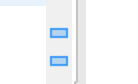
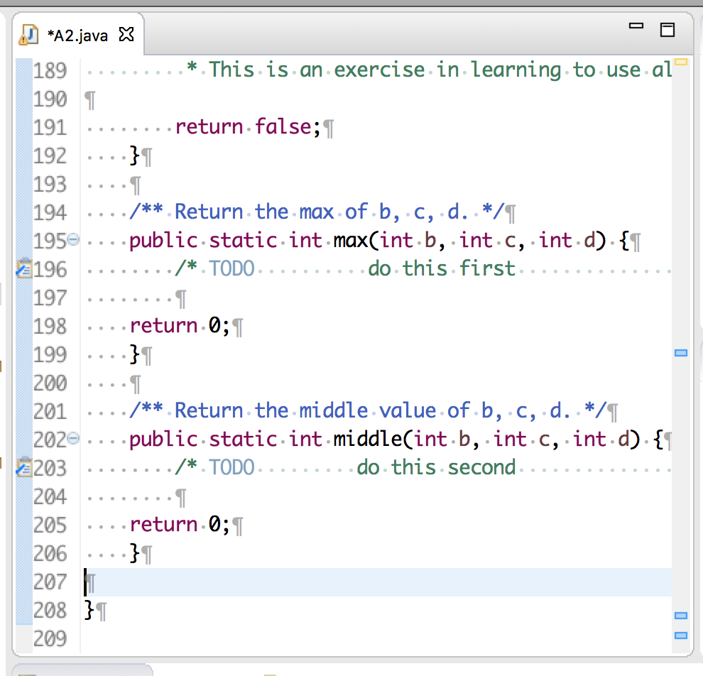

6. About TODO comments
Some assignments ask you to write a few methods. We give the method specs and header, and you have to write the body. There may be a comment at the beginning of the method body that looks like this:
/** TODO ... some hints or instructions ... */
You see two such comments in the image below.
Don't delete these comments! TODO comments have a special place in Eclipse. Note the blue rectangles in the rightmost column of the editing pane, as shown to the right. The column contains one blue marker for each TODO comment in the file! Clicking on that blue marker highlights the associated TODO comment.
Some programmers use this feature to keep track of what they still have to do.
